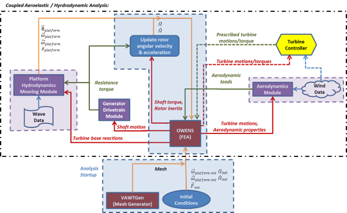

TODO: condense and update this with the latest updates
subtitle: | Version 1.0
User Guide
*Brian C. Owens
*
Wind Energy Technologies
Sandia National Laboratories
*November 11, 2013
* title: | Offshore Wind Energy Simulation
Analysis Tool: OWENS
Contents {#contents .TOC-Heading}
Overview of OWENS Model Formulation 1
Overview of OWENS Analysis Framework 4
Platform dynamics software interface 7
OWENS Command Line Execution 8
Creating Campbell Diagrams of a VAWT Configuration 9
Transient Analysis Execution 11
Specified rotor speed profile 11
Forced start-up mode using generator 11
Transient Analysis Execution Using Reduced Order Model 12
OWENS Main Input File (.owens) 14
Element Property File (.el) 15
Element Orientation File (.ort) 16
Concentrated Nodal Terms File 16
Boundary Conditions File (.bc) 17
Platform Simulation File (.plat) 17
Appendix A: Mapping from local nodal DOF numbering to global DOF numbering 22
Introduction
This user guide presents instructions for using the Offshore Wind ENergy Simulation (OWENS) analysis tool. This structural dynamics finite element analysis tool is intended to be used for the analysis of vertical-axis wind turbine (VAWT) on a floating platform, and is used in conjunction with the VAWTGen mesh generator described in a separate user manual[1]. An overview of the OWENS analysis tool is presented. The execution, analysis modes, input files, and resulting output files for OWENS are discussed in detail. Visualization options for modal and transient analysis are also presented. Version 1.0 of OWENS presents a structural dynamics tool for modal and transient analysis of an arbitrary VAWT structure affixed to a floating platform. Simple drivetrain and generator modules are also present in this version. Future work will implement fully coupled hydrodynamic, aerodynamic, and more robust nonlinear formulations.
Overview of OWENS Model Formulation
The fundamental requirements of the aeroelastic analysis tool for off-shore VAWTs necessitates a flexible framework capable of considering arbitrary configuration geometries, arbitrary loading scenarios, and the ability to interface with various modules that account for the interaction of the environment and power generation hardware with the turbine structure. The finite element method provides a means to satisfy these general requirements. If a sufficiently robust element is developed, a mesh (collection of elements) of an arbitrary VAWT configuration may be constructed via a mesh generator. The ability to capture various couplings and provide an accurate representation of turbine behavior will depend on the robustness of the element formulation.
The finite element method requires boundary conditions to be imposed on the elements by specifying loads or displacements at discrete points (nodes) in the mesh. These boundary conditions provide a clear interface between aerodynamic and hydrodynamic modules that impart forces on the turbine. With boundary conditions specified, unspecified displacements and loads may be calculated. Next, displacement motions of the turbine may be provided to aerodynamic and hydrodynamic modules to calculate loads on the turbine. This gives rise to mutual causation because in reality loads and displacements are intricately connected. Iterative procedures, however, often allow for a convergence to be reached, eliminating this issue for all practical purposes.
The subsections that follow will present basic formulation concepts for the OWENS analysis tool.
Basic Formulation Concepts
Basic formulation concepts will be discussed before describing components of the proposed formulation in detail. As stated earlier, the finite element method is utilized for its robustness and flexibility. A robust element formulation will become the foundation of the aeroelastic analysis tool. Analysis of the dynamic response of the turbine is challenging because of rotating components. Because almost all structural components of the turbine will be rotating at some rotor speed (), it is convenient to perform the formulation in a rotating reference frame. Such a frame is capable of capturing rotational effects, including centrifugal stiffening/softening and Coriolis effects.
Equations of Motion
Equations of motion for the platform are developed by treating the platform as a rigid body, whereas the turbine is treated as a rotating deformable body. Motions of discrete points on the turbine can be expressed as the sum of the turbine motion (deformation and rigid rotor rotation) and the platform motion (rigid). Expressions for the velocities of the platform and for an arbitrary point on the turbine are shown below:
\[{\overset{}{V}}_{platform} = {\frac{_{}^{(N)}d}{\ dt}{\overset{}{R}}_{P/N} = \dot{U}}_{1}{\widehat{n}}_{1} + {\dot{U}}_{2}{\widehat{n}}_{2} + {\dot{U}}_{3}{\widehat{n}}_{3}\]
\[{\overset{}{\omega}}_{platform} = \omega_{1}{\widehat{p}}_{1} + \omega_{2}{\widehat{p}}_{2} + \omega_{3}{\widehat{p}}_{3}\]
\[\overset{}{v} = {\overset{}{V}}_{platform} + {\lbrack(\overset{}{\omega}}_{platform} + \Omega{\widehat{h}}_{3}) \times \overset{}{r}\rbrack + \frac{_{}^{(H)}d}{\ dt}\overset{}{r}\]
{width="2.3in" height="2.28in"}
Figure 1 Illustration of frames, position vectors, and angular velocities
Figure 1 presents an illustration of the frames, angular velocities, and positions vectors that will be described. Here, U~i~ represents the displacement components of the platform center of mass, and ~i~ represents the angular velocity components of the platform. The inertial frame is represented by the n~i~ coordinate axes, the platform frame is represented by the p~i~ coordinate axes, and the rotating hub frame is represented by the h~i\ ~coordinate axes. The vector r defines the position of an arbitrary point on the turbine with respect to the hub frame origin. The time derivative of this vector is taken within the hub frame and is essentially the time derivative of turbine deformations. The platform and hub frame origins are coincident, and there is no translational velocity of the hub frame relative to the turbine frame. Hamilton's principle relates the variation of kinetic energy (T) and potential energy (V), and virtual work of non-conservative forces (未W~np颅~) to formulate equations of motion. Hamilton's extended principle is written simply as:
\[\delta\int_{t_{1}}^{t_{2}}{\left\lbrack T(t) - V(t) \right\rbrack dt +}\int_{t_{1}}^{t_{2}}{\delta W_{np} = 0}\]
The kinetic energy of the system may be written compactly as:
\[T_{system} = T_{platform} + T_{turbine}\]
\[T_{platform} = \frac{1}{2}M_{platform}{\overset{}{V}}_{platform} \bullet {\overset{}{V}}_{platform} + \frac{1}{2}{{(\overset{}{\omega}}_{platform})}^{T}\lbrack J\rbrack{\overset{}{\omega}}_{platform}\]
\[T_{turbine} = \frac{1}{2}\int_{V}^{}\rho\overset{}{v} \bullet \overset{}{v}dV\]
The platform kinetic energy is decomposed into two parts, translational kinetic energy and rotational kinetic energy (where [J] is the moment of inertia tensor for the platform). The turbine (which will be represented by a collection of elements) kinetic energy is expressed in terms of the volume integral of the turbine density and the velocity of infinitesimal points in the turbine (as developed earlier).
Note that the quantities described above may be represented or "coordinatized" in any frame. Indeed, some vectors were expressed in the inertial (n~i~) frame, and others in the rotating hub (h~i~) frame. Because the rotating turbine represents the bulk of the modeling effort, the implementation of the equations of motion will be coordinatized in the hub frame. Platform motions and forces, however, are described in the inertial or platform frames. Therefore, transformations between the various frames are performed where necessary.
In the development of equations of motion, one can choose to retain the rotor angular velocity/acceleration ($\Omega$) and platform angular velocity/acceleration ($\omega_{i})$ as degrees of freedom in the resulting system of equations or as specified parameters. Retaining these terms as degrees of freedom is undesirable because it adds significant complexity to the formulation and introduces a significant number of nonlinear terms. More critically, however, is that the analysis tool must be interfaced with independent modules for aerodynamics, hydrodynamics, and generator dynamics that will affect these rotational motion quantities. Therefore, it is not possible to retain these variables as degrees of freedom in the model formulation without losing the ability to interface generic modules. Accordingly, these variables will be retained as specified motion parameters. The value of these parameters will be updated by post-processing routines after gathering information from the aforementioned modules and turbine motions.
The resulting equations of motion for a floating turbine structure will be of the following form (hyperbolic):
\[\lbrack M\rbrack\left\{ \ddot{U} \right\} + \lbrack C\rbrack\left\{ \dot{U} \right\} + \lbrack K\rbrack\left\{ U \right\} = \left\{ F \right\}\]
This can be decomposed to show contributions from the turbine and platform and show couplings between the two:
\[\begin{bmatrix} M_{TT} & M_{TP} \\ M_{PT} & M_{PP} \end{bmatrix}\begin{Bmatrix} {\ddot{U}}_{T} \\ {\ddot{U}}_{P} \end{Bmatrix} + \begin{bmatrix} C_{TT} & C_{TP} \\ C_{PT} & C_{PP} \end{bmatrix}\begin{Bmatrix} {\dot{U}}_{T} \\ {\dot{U}}_{P} \end{Bmatrix} + \begin{bmatrix} K_{TT} & K_{TP} \\ K_{PT} & K_{PP} \end{bmatrix}\begin{Bmatrix} U_{T} \\ U_{P} \end{Bmatrix} = \begin{Bmatrix} F_{T} \\ F_{P} \end{Bmatrix}\]
Such that M, C, and K represent the system mass, damping, and stiffness matrices respectively. The terms U~T~ and U~P~ denote the displacement of the turbine and platform respectively. The terms F~T~ and F~P~ denote the forces acting on the turbine and platform respectively. Terms with subscript "TT" denote influence of the turbine forces on the turbine response. Whereas, terms with subscript "TP" denote influence of turbine forces on the platform response, and terms with subscript "PT" denote influence of the platform forces on the turbine response. Finally, terms with subscript "PP" denote the influence of platform forces on the platform response. Although not explicitly shown here, the rotor velocity/acceleration and platform velocity/acceleration are incorporated in the system damping and stiffness matrices through gyroscopic effects.
Modal analysis may be performed on the above system of equations to examine the stability of the turbine configuration. Whereas understanding the stability of a turbine to avoid potential resonance issues is critical, transient conditions such as rotor start-up, turbulent/unsteady winds, and unsteady waves require a transient analysis capability. Implicit time integration methods have been considered for their ability to reduce time step restriction and maintain efficiency.
Overview of OWENS Analysis Framework
The Offshore Wind Energy Numerical Simulation (OWENS) allows for a convenient coupling of the aeroelastic/structural dynamics finite element analysis to aerodynamic, hydrodynamic, and generator modules. Figure 2 shows an illustration for the framework of OWENS indicating data flow among the analysis tool and various modules. In this figure analysis components surrounded in the purple boxes are independent modules that will interface with the VAWT simulation tool. OWENS will provide and receive data to and from these modules. The implementation of these modules, however, are "as is" and cannot be modified by the authors. Components outlined in the blue boxes are components of the analysis tool that are under direct development by the authors. Data flow is illustrated by various colored arrows. Orange arrows denote an internal data flow from one segment of the OWENS analysis routines to another. Red arrows denote flow of information from the core analysis tool to external modules. Green arrows represent flow of information from external modules to the core analysis tool components.
This analysis framework begins with startup procedures. These include creation of the VAWT configuration mesh using the mesh generator VAWTGen, and specification of initial conditions. VAWTGen produces a finite element mesh representative of a VAWT. Initial conditions such as the initial forces acting on the turbine/platform, initial rotor angular velocity/acceleration, and initial platform angular velocity/acceleration must be provided. With these specifications complete, the coupled aeroelastic/hydrodynamic analysis begins, involving the components outlined in the black box.
The mesh and initial conditions are provided to the OWENS toolkit. By performing a transient analysis via the aforementioned time integration procedures, turbine and platform motions are calculated. The turbine motions along with aerodynamic properties of the turbine are provided to an aerodynamics module. Future versions will actively link OWENS with aerodynamic modules and wind field data while considering turbine motions to calculate aerodynamic loads on the turbine. The aerodynamic loads are provided back to the OWENS toolkit as boundary conditions for the next time step or iteration.
The motion of the turbine shaft is provided to a generator/drivetrain model, which considers the relative motions of the shaft and generator to calculate a resistance torque provided by the generator. By considering the resistance torque along with the shaft torque and rotor inertia, an updated rotor angular velocity/acceleration may be calculated. The generator module is similar to that of NREL's FAST analysis tool [3].
OWENS is interfaced with the WavEC platform dynamics module[2]. The hydrodynamics/mooring module accepts wave data as external forcing on the platform and a reaction force from the attached turbine structure. This module returns rigid body motions (translational and rotational) of the platform due to platform accelerations. These rigid body motions are then applied to the structure as body forces. The resistance torque of the generator may also be applied to the platform.
The above description fully outlines the proposed analysis framework and interface of the core analysis tool with various modules. In the development of this framework, a loose coupling is inherent in that typically motions are provided to a module and loads are calculated and supplied back to the analysis tool. In reality such a clear flow of information does not exist, and the coupling is more complex with loads influencing motions in addition to the motions influencing loads. Therefore, at any given time step an iterative procedure is considered to reach a convergence among the actual two-way coupling between the turbine structural dynamics and aerodynamics, hydrodynamics, and generator dynamics.
Future versions may consider a turbine controller algorithm that provides prescribed motions of the tower and blades or applied braking torque is also required. The prescribed motions or applied torques are imposed via boundary conditions on the finite element model. As illustrated in Figure 2, the turbine controller accepts turbine motions, rotor speed/torque, or wind data and provides prescribed motions or breaking torques. The finite element model provides a convenient interface for the turbine controller.
{width="8.1578947944007in" height="5.019896106736658in"}
Figure Analysis framework for the OWENS toolkit
OWENS Installation
The OWENS analysis software should be installed by adding the following directories to the MATLAB path:
OWENS\source
OWENS\source\commonSource
OWENS\source\modalSource
OWENS\source\transientSource
OWENS\source\utilitySource
OWENS\serverFiles
Platform dynamics software interface
If a floating turbine is to be considered, the WavEC platform dynamics software[2] should be installed and the file "waveECStartUp.m" should be modified in the "OWENS/source/transientSource/" directory. An appropriate system call must be specified to launch a MATLAB instance of WavEC that accepts a network socket connection from OWENS. The string variable "sysCallString" in the following code snippet must be modified appropriately depending on whether a Unix or PC system is being used.
%sets system commands to launch wavEC software
hydroLaunchScript = \'/home/bcowens/work/OWENSsingle/launchPlatformCode\';
%sysCallString = [matlabPath,\' -sd \',hydroCodeDirectory,\' -r \',hydroCodeExec,\' &\'];
sysCallString = [\'bash \',hydroLaunchScript,\' &\'];
disp(\'launching WAVEC\'); %launch wavEC depending on pc or unix environment
if(ispc());
system(sysCallString);
end
if(isunix())
unix(sysCallString);
end
OWENS Command Line Execution
The beta version of OWENS is written using the MATLAB programming language. The OWENS source code directory (and subdirectories) should be added to the MATLAB path, and OWENS should be executed from a job directory containing the associated input files described in the following section. Three types of analysis capabilities exist: static, modal and, transient analysis. These will be described in the following subsections.
Static Analysis Execution
The static analysis capability of OWENS is executed as follows:
owens(inputFile,'S',rotorSpeed,nonlinearBool,dispGuess);
For example:
owens('vawt.owens','S',0.5,true);
Performs a modal analysis using the main OWENS input file "vawt.owens". The input character 'S' denotes a static analysis is to be performed. Rotor speed input is the specified angular velocity of the rotor in Hz. The Boolean input of "true" geometric nonlinearities. Setting this Boolean to false performs a linear static analysis. The input "dispGuess" is an array of the initial guess for displacements to be used in nonlinear static analysis and should be a vector of the total number of degrees of freedom in the structural model (number of nodes x 6). It is not used if nonlinearBool is set to false. If not specified, the initial guess is a vector of zeros by default.
By default, body forces from gravity and rotational effects are included in static analysis. Arbitrary static loading may be specified by modifying the "externalForcingStatic.m" file in the OWENS source directory. The Fexternal array may be modified to include loads for a corresponding degree of freedom in the Fdof array. See this function for usage instructions.
For nonlinear static analysis, load stepping procedures are implemented within OWENS. The parameters governing load stepping and nonlinear iteration may be adjusted if desired by the user and the process is described in Appendix B.
Modal Analysis Execution
The modal analysis capability of OWENS is executed as follows:
owens(inputFile,'M',rotorSpeed,spinUpBool,numModesOutput,dispGuess);
For example:
owens('vawt.owens','M',0.0,true,40);
Performs a modal analysis using the main OWENS input file "vawt.owens". The input character 'M' denotes a modal analysis is to be performed. Rotor speed input is the specified angular velocity of the rotor in Hz. The Boolean input of "true" activates a spin up procedures which performs a nonlinear static analysis on the structure to arrive at a "stiffened" stiffness matrix to be used in the modal analysis. Setting this Boolean to false skips the spin up procedure and uses an unmodified stiffness matrix in modal analysis. The last argument is the number of modes extracted and output for the model. If no value is specified, the default number is 20. The input "dispGuess" is an array of the initial guess for displacements to be used in nonlinear static analysis and should be a vector of the total number of degrees of freedom in the structural model (number of nodes x 6). It is not used if spinUpBool is set to false. If not specified, the initial guess is a vector of zeros by default.
By default, body forces from gravity and rotational effects are included in static analysis used in pre-stressed modal analysis. Arbitrary static loading may be specified by modifying the "externalForcingStatic.m" file in the OWENS source directory. The Fexternal array may be modified to include loads for a corresponding degree of freedom in the Fdof array. See this function for usage instructions.
For pre-stressed modal analysis (which employs nonlinear static analysis), load stepping procedures are implemented within OWENS. The parameters governing load stepping and nonlinear iteration may be adjusted if desired by the user and the process is described in Appendix B.
Creating Campbell Diagrams of a VAWT Configuration
Automated functionality exists for creating Campbell diagrams of a land based VAWT configuration. A Campbell diagram examines how modal frequencies vary with respect to the rotor speed of a turbine. It is also helpful for identifying critical per-rev excitations that may cause resonance in a VAWT configuration.
The function "campDiagramGen.m" located in "OWENS/source/utilitySource/" performs modal analysis at user specified rotor speeds. Command line execution is performed with the following call:
[freq] = campDiagramGen(inputFileName,outputFileName,rotorSpeedArray,spinUpOn,numModes)
Such that "inputFileName" is a string specifying the main .owens file corresponding to the VAWT configuration. The "outputFileName" is a string specifying the prefix that will be given to a MATLAB .mat array containing the results. The rotor speed array and corresponding frequencies are saved to this .mat file. The "rotorSpeedArray" variable is an array containing the rotor speeds (Hz) of interest. The Boolean flag "spinUpOn" includes nonlinear stress stiffening effects in modal analysis if set to true, if set to false these effects are excluded from the analysis. The integer "numModes" specifies the number of lower system modes to extract during modal analysis.
The previous functionality performed the analysis for creating a Campbell diagram, and "campDiagPlotter.m" in "OWENS/source/utilitySource" plots the Campbell diagram. Command line execution of Campbell diagram plotting is performed with the following call:
campDiagPlotter(resultsFileName,numModesToPlot,numPerRevLines,minRPMplot,maxRPMplot)
Such that "resultsFileName" is a string specifying the .mat file generated using campDiagramGen.m. The integer "NumModesToPlot" specifies the number of modes to be plotted on the Campbell diagram. The integer "numPerRevLines" specifies how many per-rev lines to include on the Campbell diagram. The values "minRPMplot" and "maxRPMplot" specify the RPM values at which the per-rev lines will begin and end. Figure 3 shows an example of a Campbell digram generated using the aforementioned procedures.
{width="5.829861111111111in" height="4.254861111111111in"}
Figure 3 Example of a Campbell diagram
Transient Analysis Execution
The transient analysis capability of OWENS is executed as follows:
owens(inputFile,'TNB',timeStep,numTimeSteps,nlBool,turbineOperationParams...);
By default, body forces from gravity and rotational effects are included in trasient analysis. Arbitrary transient external loading may be specified by modifying the "externalForcing.m" file in the OWENS source directory. The Fexternal array may be modified to include loads for a corresponding degree of freedom in the Fdof array. See this function for usage instructions.
Specified rotor speed profile
An arbitrary VAWT configuration may be subjected to an arbitrary, specified rotor speed profile using the following command line execution.
owens('vawt.owens','TNB',1.0e-3,40000,true,0,[0.0 5.0 30.0],[0.0 0.5 0.5]);
This performs a transient analysis using the main OWENS input file 'vawt.owens'. The input character 'TNB' denotes a transient analysis is to be performed. A time step of 1.0e-3 seconds is utilized and 40000 time steps are performed for a simulation time of 40 seconds. The flag of true activates nonlinear strain calculation in the transient analysis. The turbine operation flag of "0" denotes a specified omega profile is utilized. The 7^th^ argument is an array of times for the specified rotor speed profile. The 8^th^ argument is an array of specified rotor speeds at the aforementioned times.
Alternatively, the 7^th^ and 8^th^ arguments may be omitted and the file "OWENS\source\userDefinedRotorSpeedProfile.m" may be modified to specify an arbitrary time varying rotor speed profile. See the comments within this function for appropriate usage.
Forced start-up mode using generator
An arbitrary VAWT configuration may be subjected to a forced start-up mode using the generator to provide a motoring torque using the following command line execution.
owens('vawt.owens','T',1.0e-3,40000,true,1,0.0);
This performs a transient analysis using the main OWENS input file 'vawt.owens'. The input character 'TNB' denotes a transient analysis is to be performed. A time step of 1.0e-3 seconds is utilized and 40000 time steps are performed for a simulation time of 40 seconds. The flag of true activates nonlinear strain calculation in the transient analysis. The turbine operation flag of "1" denotes a forced start up using the generator as a motor. Accordingly, generator properties must be specified by providing a .gen file. The 7^th^ argument is the initial rotor speed at t=0 in Hz.
Alternatively, the .gen file in the main .owens input file may be replaced with the integer "1" and a user defined generator function may be employed. The file "OWENS\source\userDefinedGenerator.m" may be modified to specify an arbitrary time varying rotor speed profile. See the comments within this function for appropriate usage.
Self-starting turbine mode
An arbitrary VAWT configuration may be considered in a self-starting mode in which external forces provide a torque to increase the rotor speed of the turbine using the following command line execution.
owens('vawt.owens','T',1.0e-3,40000,true 2,0.0,1.05);
This performs a transient analysis using the main OWENS input file 'vawt.owens'. The input character 'TNB' denotes a transient analysis is to be performed. A time step of 1.0e-3 seconds is utilized and 40000 time steps are performed for a simulation time of 40 seconds. The turbine operation flag of "2" denotes a self-starting turbine with the generator disconnected from the grid initially. The 7^th^ argument is the initial rotor speed at t=0 in Hz. The 8^th^ argument is the rotor speed at which the generator will activate. Accordingly, generator properties must be specified by providing a .gen file. The history of nodal displacements, generator torque, generator power, rotor speed, rotor position, and reaction at the turbine base at each time step are saved in the MATLAB file \<root\>.mat such as "vawt.mat". Table 1 provides a listing with output description, variable name, and size of the output.
Transient Analysis Execution Using Reduced Order Model
The transient analysis capability with a reduced order model of OWENS is executed as follows:
owens(inputFile,'ROM',timeStep,numTimeSteps,numModesForROM,nlBool,turbineOperationParams...);
This option performs a transient analysis as before, but using a reduced order model which contains a subset of system modes as specified by "numModesForROM". The reduced order model contains the first "numModesForROM" lowest frequency modes. A modal analysis should be constructed to determine how many modes a user is interested in including in a reduced order model. The various operation modes (specified rotor speed, force start-up, self-starting) are specified as in the previous section.
OWENS Input Files
This section presents input file formats for OWENS, including the main input file and sub-input files. The input files discussed in this section include:
OWENS main input file (.owens)
Beam mesh file (.mesh)
Element property file (.el)
Element orientation file (.ort)
Joint file (.jnt)
Concentrated nodal term file (.ndl)
Boundary conditions file (.bc)
Platform simulation file (.plat)
Initial conditions file (.ic)
Blade data file (.bld)
Aerodynamic loads file
Driveshaft file (.ds)
Generator properties file (.gen)
Note that while these files may be created manually, many are created automatically by the mesh generator/pre-processor VAWTGen. VAWTGen is described in a separate user guide[1] and is not discussed here.
OWENS Main Input File (.owens)
The OWENS main input file is generated by VAWTGen with the following format:
vawt.mesh
vawt.el
vawt.ort
vawt.jnt
[concentrated nodal terms file]
vawt.bc
0 vawt.plat
[initial conditions file]
0 vawt.bld [aero loads file]
0 [drivetrain property file]
[generator property file]
0.0 0.0
The mesh, element, orientation, joint, and boundary conditions files for analysis are listed. The bracketed file comments serve as place holders and are not essential for all OWENS analysis types. The 5^th^ line specifies a concentrated nodal term file that can be used to specify concentrated masses, stiffness, and loads at nodal locations. The 6^th^ line specifies a boundary condition file. The integer on the 7^th^ line is a flag for activating the floating platform (1 active, 0 inactive) and the following platform file contain information governing a platform dynamics analysis. The 8^th^ line specified initial conditions for a transient analysis. The flag on the 9^th^ line governs activation of aerodynamic loads, a blade file provides information for mapping aerodynamic loads to the structural mesh, and an aerodynamic loads file provide loading data. The flag on the 10^th^ line governs activation of a simple drivetrain model and the drive train property file contains drive train model properties. The 11^th^ line specifies properties for a simple induction generator, which is not required for all analysis types. The 12^th^ line specifies Rayleigh damping parameters. These are the and parameters respectively in the following expression for the damping matrix:
\[\lbrack C\rbrack = \ \alpha\lbrack M\rbrack + \beta\lbrack K\rbrack\]
Such that [M], [C], and [K] are the system mass, damping, and stiffness matrices respectively. and should be positive numbers. serves to damp higher frequency modes while serves to damp lower frequency modes.
Mesh File (.mesh)
The mesh file generated by VAWTGen simply lists nodal coordinates and element connectivity. The number of structural components (tower, blades, and struts) and number of elements per component are also listed in this file. The file format is described below:
numNodes numElements
nodeNum xCoord yCoord zCoord
nodeNum xCoord yCoord zCoord
nodeNum xCoord yCoord zCoord
...
elementNum numNodesPerElement localNodeNum1 localNodeNum2
elementNum numNodesPerElement localNodeNum1 localNodeNum2
elementNum numNodesPerElement localNodeNum1 localNodeNum2
...
numberOfStructuralComponents numElementsComponent1 .... numElementsComponentN
Element Property File (.el)
The element property file generated by VAWTGen contains element mechanical and some aerodynamic properties. The properties specified in this file are those defined in the NREL file formats [1], but sorted into a form that is more usable by the OWENS analysis tool. It should be noted that the mass offsets have been corrected to be the distance from the offset from the elastic axis of section. Edgewise offsets are positive towards the trailing edge, flapwise offsets are positive outward from the machine center. The alpha coupling factor is not currently employed in analysis. The file has the following format:
Element1, Node 1: [blade fraction] [aeroCenter] [structuralTwist] [MassPerLength] [FlapwiseStiffness] [EdgewiseStiffness] [TorsionalStiffness] [AxialStiffness] [alphaCouplingFactor] [FlapwiseInertia] [EdgewiseInertia] [Precurve] [PreSweep] [FlapwiseCGoffset] [EdgewiseCGOffset] [FlapwiseEAOffset] [EdgewiseEAOffset] ...
Element1, Node 2: [blade fraction] [aeroCenter] [structuralTwist] [MassPerLength] [FlapwiseStiffness] [EdgewiseStiffness] [TorsionalStiffness] [AxialStiffness] [alphaCouplingFactor] [FlapwiseInertia] [EdgewiseInertia] [Precurve] [PreSweep] [FlapwiseCGoffset] [EdgewiseCGOffset] [FlapwiseEAOffset] [EdgewiseEAOffset] ...
...
...
Element n, Node 1: [blade fraction] [aeroCenter] [structuralTwist] [MassPerLength] [FlapwiseStiffness] [EdgewiseStiffness] [TorsionalStiffness] [AxialStiffness] [alphaCouplingFactor] [FlapwiseInertia] [EdgewiseInertia] [Precurve] [PreSweep] [FlapwiseCGoffset] [EdgewiseCGOffset] [FlapwiseEAOffset] [EdgewiseEAOffset] ...
Element n, Node 2: [blade fraction] [aeroCenter] [structuralTwist] [MassPerLength] [FlapwiseStiffness] [EdgewiseStiffness] [TorsionalStiffness] [AxialStiffness] [alphaCouplingFactor] [FlapwiseInertia] [EdgewiseInertia] [Precurve] [PreSweep] [FlapwiseCGoffset] [EdgewiseCGOffset] [FlapwiseEAOffset] [EdgewiseEAOffset] ...
Element Orientation File (.ort)
The element orientation file generated by VAWTGen lists Euler angles for a 3-2 rotation sequence and some other miscellaneous element information. The file format is described below:
elNum theta3 theta2 theta1 length xOffset yOffset zOffset
Such that elNum is the element number. Theta3, theta2, and theta1 are the orientation angles (degrees) about a 3, 2, and 1 axes respectively for a 3-2-1 Euler rotation sequence. Length is the element length, and x/y/zOffsets are the offsets of the first node of the element from the coordinate frame origin.
Joint File (.jnt)
The joint file generated by VAWTgen specifies joint conditions at coincident nodes between structural components. The file format for the joint file is shown below:
jointNumber masterNode slaveNode jointType jointMass 0.0 ... jointPsi jointTheta
A master and slave node is defined at a joint from which constraints will be developed. The joint type is also specified (0 = weld(fixed), 1=pinned, 2 = hinge joint with axis about slave node element's e~2~ axis, 3 = hinge joint axis about slave node element's e~1~ axis, 4 = hinge joint axis about slave node element's e~3~ axis). The mass of the joint may be specified in this file. If this option is not sufficient for modeling purposes concentrated mass can be imposed on degrees of freedom using the .ndl file. [A place-holder double of zero after jointMass is also in this file, but not currently used in analysis.]{.mark} The orientation associated with the joint is also described by the jointPsi and jointTheta angles (degrees). These angles are used to transform from the global coordinate frame to the local element/joint frame via a 3-2 Euler rotation sequence. Psi denotes rotation about 3, theta denotes rotation about 2.
Concentrated Nodal Terms File
The concentrated nodal terms file applies concentrated mass, stiffness, or forces to nodes of the finite element mesh. This files requires a node number, concentrated term type, local degree of freedom number, and value for the concentrated term. Concentrated term types include "M" for mass, "K" for stiffness, and "F" for force. The degree of freedom specification is not used when the concentrated term is for mass. The mass value specified is applied to all translational degrees of freedom associated with the specified node. See Appendix A for an explanation of local degree of freedom numbering at a particular node. A sample concentrated nodal terms file is shown below:
74 M 1 254.0
81 K 3 1.0e6
92 F 2 2000.0
nodeNum termType localDOFNum value
Boundary Conditions File (.bc)
The boundary conditions file generated by VAWTGen specifies a fixed boundary condition at the tower base (node 1). This file specifies the number of boundary conditions, the node number, local degree of freedom, and specified displacement value for the boundary condition. This file attempts to provide a likely boundary condition for a VAWT structure, but may need to be modified by the analyst depending on the specific configuration of interest. See Appendix A for an explanation of local degree of freedom numbering at a particular node. The boundary condition file generated by VAWTGen is shown below:
6
1 1 0.000000
1 2 0.000000
1 3 0.000000
1 4 0.000000
1 5 0.000000
1 6 0.000000
nodeNum localDOFNum value
Platform Simulation File (.plat)
The platform simulation file specifies parameters required for an external platform dynamics simulation. An example, annotated platform file is shown below.
1 0 0 0 0 0 :active platform DOFs (surge, sway, heave, roll, pitch, yaw)
0.0 0.0 0.0 0.0 0.0 :initial conditions for platform DOFs
0 :drag damping flag (1 = on, 0 = off)
1 :mooring flag (1 = on, 0 = off)
0 :gravity flag (1 = on, 0 = off)
0 :plot flag (1 = on, 0 = off)
0 :radiation damping flag (1 = on, 0 = off)
1 :node number for platform turbine connection
1 :platform turbine yaw interaction (0 = free spinning tower, 1 = fixed tower, 2 = generator reaction torque applied to platform)
3500 :platform server port
4500 :platform client port
The first line activates platform degrees of freedom (DOFs) the ordering of degrees of freedom is surge, sway, have, roll, pitch, and yaw. The second line specifies initial conditions for the platform degrees of freedom, the DOF ordering is the same as the previous line. Lines 5-7 activate/deactivate various aspects of the hydrodynamic/platform dynamics simulation (drag, mooring, gravity, plotting, and radiation damping). Line 8 specifies the node number at the connection of the turbine to the platform. This is used in calculating the reaction force the turbine imparts on the platform. Line 9 is a flag to specify the platform turbine yaw interaction. For a flag of 0 there is no interaction, for a flag of 1 the tower is considered fully constrained to the platform, for a flag of 2, the generator reaction torque is applied to the turbine. The last two lines specify the server port and client port numbers for the network socket interface between the OWENS analysis tool and the platform dynamics module.
Initial Conditions File
The initial conditions file is used for transient analysis to specify an initial displacement of the structure at t =0. This file requires a node number, local degree of freedom number, and displacement value. See Appendix A for an explanation of local degree of freedom numbering at a particular node. The file format is described below:
60 1 0.1
51 2 -0.4
nodeNum localDOFNum value
Blade Data File (.bld)
A blade data file is generated by VAWTGen to aid in mapping aerodynamic loads to the structural mesh generated by VAWTGen. This information includes the blade number, node locations of blade sections in terms of spanwise distance from the blade root, and node number and element numbers associated with these locations. The file also contains the quarter chord coordinate of the blade section, the normal and tangential vector components of the blade section, and the chord of the section. Coordinate and vector components are represented in the rotating, rotor-fixed hub frame. An integer number representing the airfoil as specified in the .ipt file for the blade component and section lift curve slope are also specified. The last column is a place holder not used in the release version of OWENS. The file format for the blade file is described below:
bladeNum nodeDistance nodeNum elementNum quarterChordCoord1 quarterChordCoord2 quarterChordCoord3 sectionNormalVec1 sectionNormalVec2 sectionNormalVec3 sectionTangentVec1 sectionTangentVec2 sectionTangentVec3 sectionChord sectionAirfoilNumber [place holder not used]
Aerodynamic Loads File
Drivetrain Properties File
The drive train properties file is read for cases where the drive train flag is set to true in the main OWENS analysis file. This file contains an effective torsional spring and damping constant for the drivetrain, along with a moment of inertia for the drive train. These values are cast on the low speed shaft (LSS) side of the drivetrain. The file also contains gear ratio and gear box efficiency parameters. A sample drivetrain file is shown below:
1.0e8 1e6 1000.0 :drivetrain spring constant, damping constant, MOI
1.0 1.0 :gear ratio, gear box efficiency
Generator Properties File
The generator properties file is read where the turbine operation mode requires generator interaction. This file includes the generator rated torque, zero torque generator speed, pull out ratio, and rated slip percentage. A sample generator properties file is shown below:
2.09e4 :generator rated torque
1.0 :zero torque generator speed (in Hz)
2.0 :pull out ratio
5.0 :generator rated slip percentage
OWENS Output Files
This section describes the output files generated by the OWENS analysis software. Output is different for the static, modal, and transient analysis types.
Static Analysis Output
Output from this analysis is written to the root filename with "_static.mat" suffix, such as "vawt_static.mat". This MATLAB database contains a solution vector for each degree of freedom of the model. The deformed configuration may be visualized using VAWTGen visualization capabilities[1]. See Appendix A for an explanation of mapping between a global degree of freedom list to local degree of freedom numbering at a particular node.
Modal Analysis Output
For modal analysis the output file lists the frequency, damping ratio, and nodal values for mode shapes of the 0 degree (real) and 90 degree out of phase (imaginary) mode shapes. The generated file has the same root name as the .owens input file, but with a suffix of .out. The various mode shapes may be visualized using VAWTGen visualization capabilities[1]. The file format for the modal analysis output is shown below:
MODE # 1
Frequency: 9.941364e-001:
Damping 3.576857e-014:
0 deg Mode Shape:
Ux Uy Uz thetax thetay thetaz
-0.000000 -0.000000 -0.000000 -0.000000 0.000833 -0.000000
0.000627 0.000000 0.000000 -0.000000 0.000819 0.000000
0.001235 0.000000 0.000000 -0.000000 0.000780 0.000000
0.001819 0.000000 0.000000 -0.000000 0.000713 0.000000
0.002353 0.000000 0.000000 -0.000000 0.000620 0.000000
0.002669 0.000000 0.000000 -0.000000 0.000557 0.000000
0.002948 0.000000 0.000000 -0.000000 0.000497 0.000000
0.003196 0.000000 0.000000 -0.000000 0.000437 0.000000
...
90 deg Mode Shape:
Ux Uy Uz thetax thetay thetaz
-0.000000 -0.000000 -0.000000 -0.000000 -0.000000 -0.000000
-0.000000 -0.000000 -0.000000 -0.000000 -0.000000 -0.000000
-0.000000 -0.000000 -0.000000 -0.000000 -0.000000 -0.000000
-0.000000 -0.000000 -0.000000 0.000000 -0.000000 -0.000000
-0.000000 -0.000000 -0.000000 -0.000000 -0.000000 -0.000000
-0.000000 -0.000000 -0.000000 -0.000000 -0.000000 -0.000000
-0.000000 -0.000000 -0.000000 -0.000000 -0.000000 -0.000000
-0.000000 -0.000000 -0.000000 -0.000000 -0.000000 -0.000000
-0.000000 -0.000000 -0.000000 -0.000000 -0.000000 -0.000000
...
Mode #2
...
Transient Analysis Output
Transient analysis output has a great deal of data associated with it due to having both spatial and temporal information and OWENS transient analysis output is saved in a MATLAB workspace as \<root\>.mat. Table 1 lists the following information saved in the transient analysis output file with the variable name and associated array size. The units specified in this file assume that the mesh and associated element properties are in SI units. See Appendix A for an explanation of mapping between a global degree of freedom list to local degree of freedom numbering at a particular node.
Transient analysis output may be visualized using VAWTGen visualization capabilities[1].
Table 1. OWENS Transient Output
Output Variable Name (units) Size - - - Time t (s) 1 x numTimeSteps
Nodal displacements uHist (m or rad) numDOF x numTimeSteps
Generator torque genTorque (N-m) 1 x numTimeSteps
Generator power genPower (W) 1 x numTimeSteps
Rotor position aziHist (rad) 1 x numTimeSteps
Rotor speed OmegaHist (Hz) 1 x numTimeSteps
Rotor acceleration OmegaDotHist (Hz/s) 1x numTimetSteps
Gearbox position gbHist (rad) 1 x numTimeSteps
Gearbox speed gbDotHist (Hz) 1 x numTimeSteps
Gearbox acceleration gbDotDotHist (Hz/s) 1 x numTimeSteps
Driveshaft torque torqueDriveShaft (N-m) 1 x numTimeSteps
Platform degrees of rigidDof (m or rad) 6 x numTimeSteps freedom
Turbine base reaction FReactionHist (N or 6 x numTimeSteps force N-m) -
: Default static nonlinear analysis parameters
References
VAWTGen Manual
WavEC manual
Jonkman, J.M., and Buhl, M. L., 2005, FAST User's Guide, National Renewable Energy Laboratory, NREL/EL-500-38230.
Appendix A: Mapping from local nodal DOF numbering to global DOF numbering
Structural nodes in the finite element formulation of the OWENS toolkit each have 6 degrees of freedom. That is 3 translational and 3 rotational. The finite element mesh is represented in a Cartesian frame with "x", "y", and "z" axes. The z axis is typically located along the tower axis of the turbine. Local degree of freedom numberings 1, 2, and 3 correspond to displacements along the x, y, and z axes respectively. Local degree of freedom numberings 4, 5, and 6 correspond to rotations of 4, 5, and 6 about the x, y, and z axes respectively.
For a particular node number "nodeNum" and an associated local degree of freedom "localDOFNum" the following relation exists to the global degree of freedom number "globalDOFNum".
globalDOFNum = (nodeNum-1)*6 + localDOFNum
Appendix B: Nonlinear Static Analysis Parameters
If desired, the user may modify the default parameters for nonlinear static analysis. This is done by creating a file with the same prefix as the main (.owens) analysis file, but with the suffix ".nl". For example, if the main file for an analysis is "vawt.owens", the nonlinear parameter file should be named "vawt.nl". If no ".nl" file exists in the job directory default nonlinear static parameters will be used.
The nonlinear parameter file has the following format for adaptive load stepping in nonlinear iteration:
NR :iteration type, NR = Newton Raphson, DI = Direct Iteration
1.0e-6 :tolerance for nonlinear iteration convergence
5 :maximum number of iterations per load step
0 :integer denoting load steps (0 for adaptive), otherwise, number of load steps followed by values
20 :maximum number of load steps
0.3 :minimum load step
0.1 :minimum delta load step
The adaptive load stepping algorithm attempts to reach a converged solution by adjusting load steps as necessary within the specified or default nonlinear analysis parameters.
If desired, the user may specify a prescribed loadstepping profile for nonlinear iteration with the following file format:
NR :iteration type, NR = Newton Raphson, DI = Direct Iteration
1.0e-6 :tolerance for nonlinear iteration convergence
20 :maximum number of iterations per load step
5 0.2 0.4 0.6 0.8 1.0 :integer denoting load steps (0 for adaptive), otherwise, number of load steps followed by values
The prescribed load stepping algorithm attempts to reach a converged solution within the maximum number of iterations per load step and terminates analysis if unsuccessful.
By default, the nonlinear iteration parameters are those listed in Table
Parameter Value - - Nonlinear Iteration Tolerance 1.0e-6
Iteration Type Newton Raphson
Loads Stepping Algorithm Adaptive
Max Iterations Per Load Step 50
Max Number of Load Steps 20
Minimum Load Step 0.05
Minimum Load Step Delta 0.05